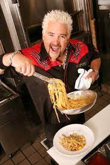

Pasta

Description
Perfect, peaceful, pristine, perky, picturesque, proper, pretty, priceless, pure pasta
Ingredients
- 1 lb/500 g dried spaghetti
- 1/2 cup extra virgin olive oil
- 10 garlic cloves
- 1 tbsp red chilli flakes
- 1/4 cup chopped parsley
Steps
- Cook 1lb/500g of dried spaghetti (or any other long dried pasta) in a large pot of salted boiling water per packet MINUS 1 minute.
- When pasta is ready, scoop out 1 cup of pasta cooking water, and drain pasta.
- Heat oil over medium high heat. Add garlic and cook until golden - be careful not to burn it.
- Toss with pasta and cooking water per Base Directions. Toss through parsley and chilli flakes, serve with parmesan.
- Season with salt and pepper to taste. Finish pasta per chosen recipe.